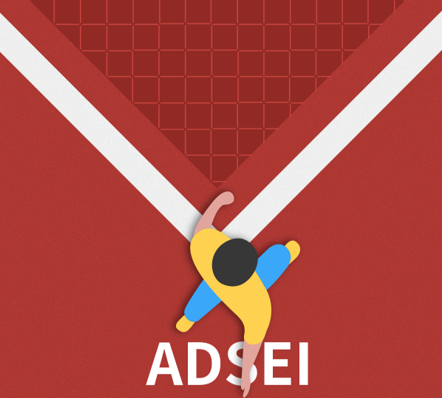

A platform to support and promote data science studies.
Project aim
The ADSEI project is an online repository for resources for data science education. The project aims to create an easy to use platform for sharing of knowledge and educational resources among schools, colleges, and universities. The finished project aimed to provide functionalities like creating and managing user accounts, managing resources (upload, modify and delete), and commenting/ tagging on the uploaded resources. All these requirements of the project were met and a few extra features like password recovery and user details modification were added.
My role and responsibilities
I have worked as a back-end developer for both project design & delivery. I have linked the front-end design with the back-end of the project. I have implemented the user sign-up, user log-in, resource upload, resource search and resource download functionalities of the project. I have also actively managed the assignment of individual tasks to the project team. I created the final promotional video and helped my team to write the pitch for the project showcase.

I implemented the user sign-up and user log-in functions using the Firebase authentication system. I also created the upload and download function for the application. This level of security was a very important requirement for the project. Furthermore by using firebase, the client has the authority to remove any account that doesn't follow their rules.
Evidence

I played the role of the group leader when she was inactive in the group because she went overseas. I reminded team members of the project expectations, deadlines and divided the tasks among the team. I took up responsibilities of project showcase files along with my back-end responsibilities. I also took on the responsibility to update Trello for my team.
Evidence

I created a promotional video to showcase our working project. I used different clips from online videos of educational institutions to make it engaging and professional. I used iMovies to insert audio clips to the background. The video was liked very much by my unit chair during the showcase.
Watch the project video
Summary
Although I was assigned the role of a back-end developer, I have ensured that I wasn't bound by the role title. I have worked in all the areas of the project to the best of my ability. I have worked on user authentication functionality and the core upload and download functionality of the online repository. I have also worked on preparing the documentations of the project such as the handover document, project synopsis, and the pitch for the showcase.I have gained a lot of valuable experience from working on this capstone project. Apart from improving technical skills, I have developed many soft skills. I believe that our project can be easily implemented by ADSEI to impart on their journey of spreading data literacy.
More on Github